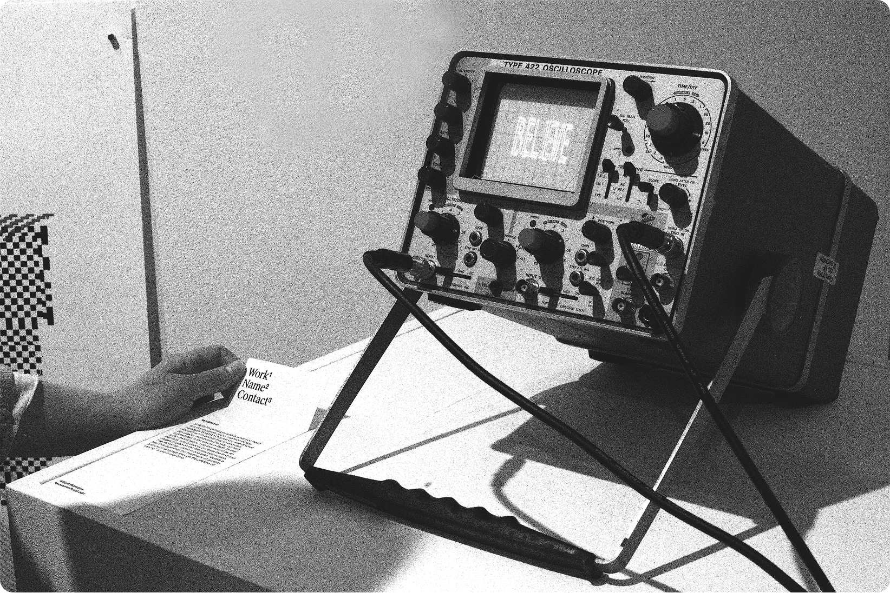
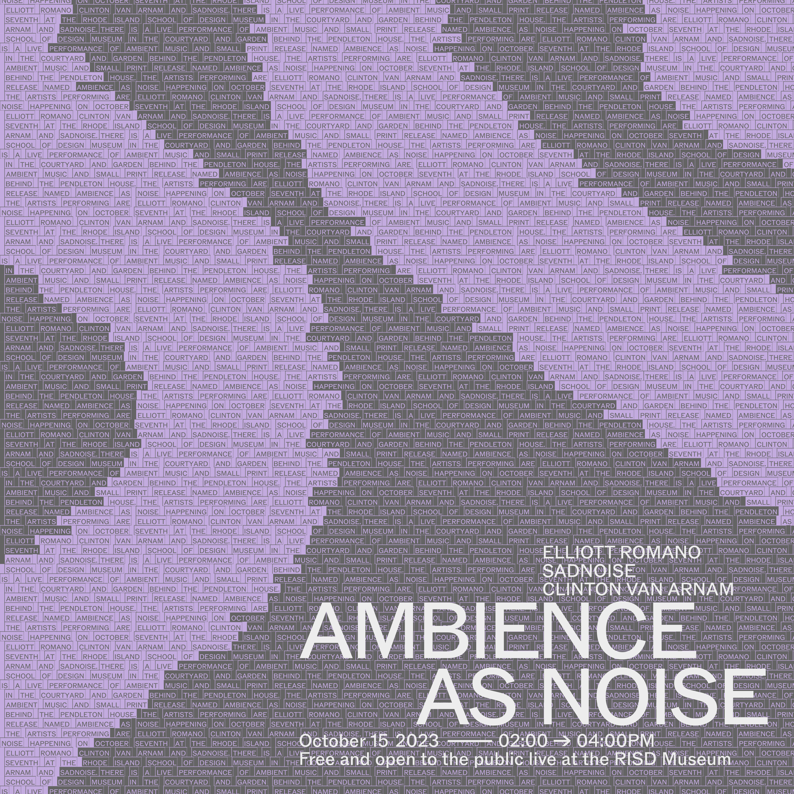
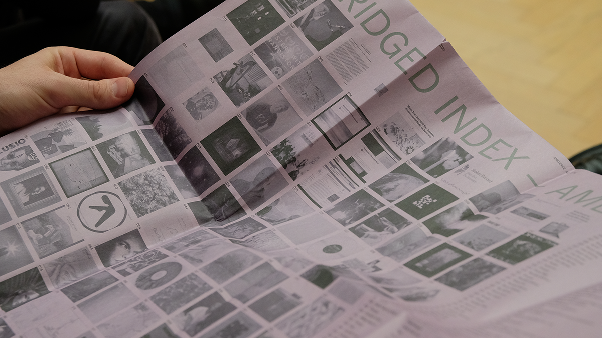
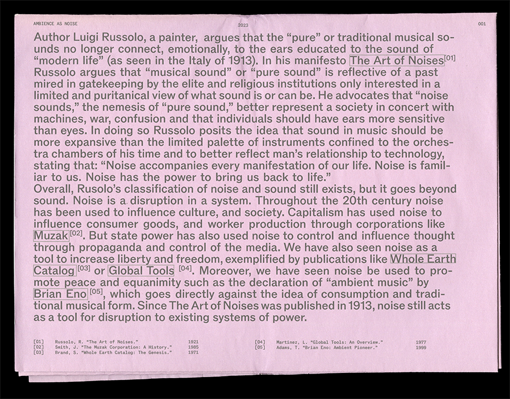
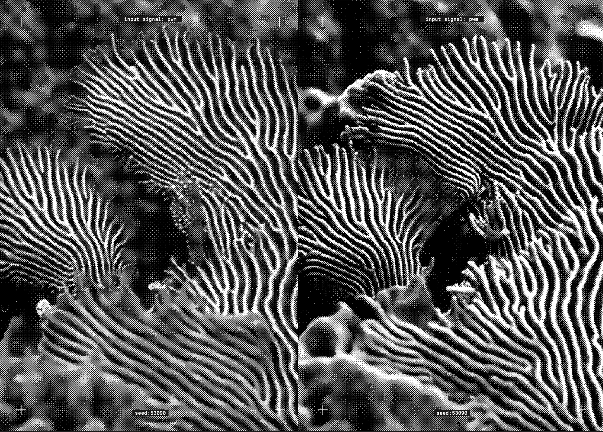

Instrument MFA Thesis
Printed Manual and lecture/performance covering a 3-year inquiry into the creation of graphic instruments, and interactive tools for audio reactive typography and design.

Elliott Romano is a graphic designer specializing in software, tools, and interactive spaces. He creates visual systems and interfaces that help people understand, shape, and play with technology.
Instrument MFA Thesis
Printed Manual and lecture/performance covering a 3-year inquiry into the creation of graphic instruments, and interactive tools for audio reactive typography and design.
RISD CTC Visual Identity
Visual identity created for RISDs newest academic program since 1996. Inspired by historical logic diagrams, the system aims to continually express the relationships between computers, technology, & culture.


OPEN SKY VISUAL IDENTITY
Printed and digital materials created for OPEN SKY, an independent exhibition of mediums exploring data & authorship. Designed in collaboration with Clinton Van Arnam.


RISD Museum digital guide & wayfinding
Redesign and reimagining of digital touchpoints throughout the RISD Museum. Created as a part of the RISD Museum Digital Initiatives team with Lucy Ngyuen Pham & Saatchi Metha
Various Flora Exhibition Concept & identity
Visual identity and exhibition concept for Various Flora, an installation exploring floral forms through the lens of machine learning.


OSCII HYBRID TYPEFACE
OSCII is a typeface created by audio. Each letterform is generated through audio signals that are mapped to XY coordinates and output via web application or hardware vector displays.

LRAD Tactical Reader
Printed publication and 3D models inspired by tatical policing materials. Created as research output into militarized audio technologies.
Ambience as Noise Exhibition
Identity and exhibition concept for Ambience as Noise, a series of audio performances in response to Luigi Russolo's 1913 manifesto "The Art of Noise". Created in collaboration with Clinton Van Arnam and Femi Shonuga-Fleming.



Mycelial Networks
An exploration into natural systems and noise algorithms. This custom software generates audio reactive visualizations of mycelial networks.

Chips Act Generative Tool
Created in response to the Chips & Science Act, this custom generative audio-visual tool generates and plays mictrochip and silicon forms in real-time.
Hypermedia
Branding for a hypothetical brand and subscription service for cybernetic audio content through extractive capitalistic SaaS wellness platform strategies. Created in collaboration with Clinton Van Arnam.